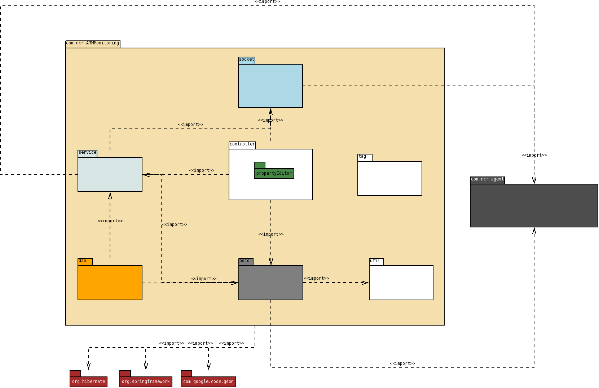

Package Diagram¶
The main package of the system is com.ncr.ATMMonitoring, from there we have the following specific packages:
- com.ncr.ATMMonitoring.controller: holds all the controller classes, those in charge of connecting the web pages with the services.
- com.ncr.ATMMonitoring.service: contains all the interfaces and implementations for each specific service.
- com.ncr.ATMMonitoring.socket: holds the classes in charge of the communication between the ATM agent and the server.
- com.ncr.ATMMonitoring.dao: inside we have all the interfaces and implementations of each DAO.
- com.ncr.ATMMonitoring.pojo: holds all the entities (POJOs) used by the system.
- com.ncr.ATMMonitoring.util: contains the util or helpers classes.
- com.ncr.ATMMonitoring.tag: inside we can find the classes that hold the logic required to define a custom JSP tag.
- The whole system has dependencies with the following external packages:
- com.ncr.agent: defines all the data classes related to the ATM agent in order to allow the communication with the server.
- Libraries: this system currently uses some well known frameworks and libraries included in the following external packages:
- org.hibernate: package that has all the Hibernate classes.
- org.springframework: holds the Spring Framework.
- com.google.code.gson: includes GSON, the library that eases the (de)serialization of Java objects to Json.
Note
in this diagram we reflected only the main dependencies. Others, such as log4j, were omitted beacuse they are not actually relevant to the architecture.